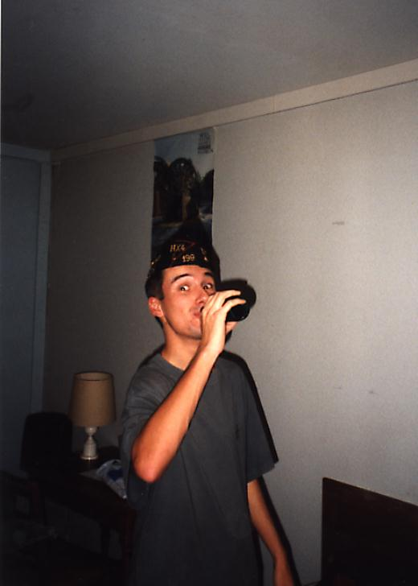
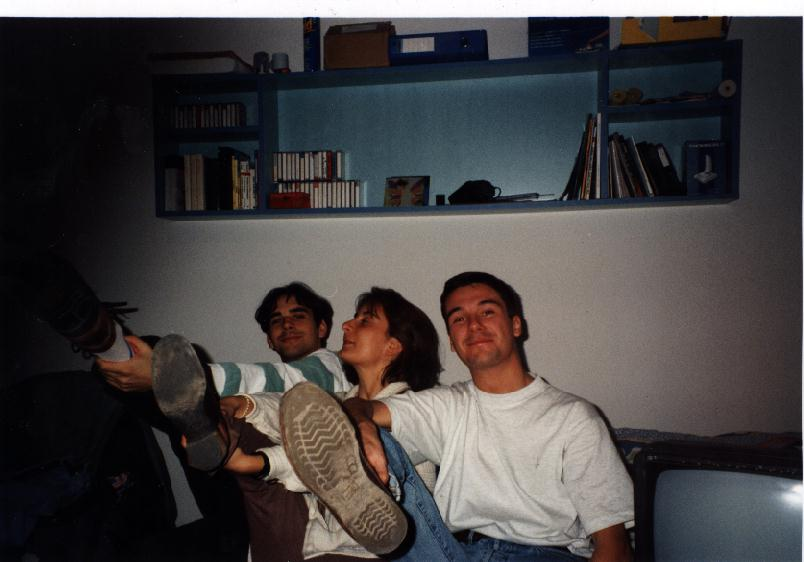

Par la suite, mes ancêtres, soucieux de vivre paisiblement dans une région tranquile, envahirent la partie nord du royaume des Francs; saccageant, pillant et massacrant tout ce qui se trouvait là (c'est pour dire comme je peux être dangereux). Après quelques péripéties, une vaste étendue leur fut donnée : La Normandie!!!
Ils y vivaient paisiblement lorsque une horde d'English men menaça soudainement d'envahir la région (gonflés quand même?)... Evidemment de telles choses ne se font pas et les Normands, peuple paisible par excellence, décidèrent d'aller racompagner les barbares chez eux. C'était en 1066 à Hastings.
Plus sérieusement je suis Français comme le prouve la photo ci-dessous:
Vive la France!!
Je passe mon temps à Paris où j'ai pas mal d'activités. J'aime jouer aux échecs , au poker et à la belote (coinchée).
J'écris pas mal car j'ai quelques correspondants en France et à l'étranger. La correspondance est une chose très intéressante, cela permet de découvrir de nouvelles régions et de progresser en anglais...J'en profite pour saluer ici Lexey, ma correspondante australienne. Hello Lexey!!
Si vous voulez commencer une correspondance avec moi, par mail ou par écrit, c'est possible.
A part ça, mes voitures préférées sont les Mercedes et les Jaguars. Voici d'ailleurs une photographie, prise au salon de l'auto de Paris en Octobre 96, c'est la voiture de mes rêves...
Mercedes 500 SL
Je suis aussi amateur de bonnes bières, la Faro c'est la meilleure! Cependant il faut toujours savoir consommer avec modération...

Je fête la fin d'un exam...
Bref je ne suis pas du genre à rester avec mes équations en soirée. J'aime bien faire la fête avec les copains (Mike, Youf, Brice, les "Versois"...).

Partie de Jambes en l'air avec Mike et Aniaa
Je vis à Paris, dans le XIIIem, mais je redescens quelquefois à Montpellier ou chez moi, dans mon petit village isolé. Là-bas il y a malgré tout pas mal de choses à faire: VTT, randonnées... et puis l'étang du village vaut bien le détour. Autres curiosités de la région: Uzès(ville médiévale), le Pont du Gard, Collias(pour une petite baignade...), Nîmes...

Ma tannière